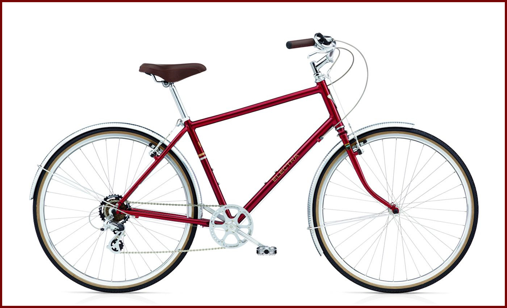

Ruby Cycle
Enumerables
While I have been using enumerables I didn't really know how to describe them. It is the name for a collection of Ruby methods which we can use to make life easier. Sounds good to me.
Cycling
i love cycling, but the Ruby version is a bit different. It goes on forever, yet doesn't take much effort. The .cycle method is a bit like the .each method, except that it will start over when it reaches the end.
> range = [1, 2, 3]
> range.cycle(2) {|i| puts i}
1
2
3
1
2
3
=> nil
An interesting use of cycle is the following
> cycle_through = range.cycle
=> # <Enumerator: [1, 2, 3]:cycle>
> cycle_through.next
=> 1
> cycle_through.next
=> 2
> cycle_through.next
=> 3
> cycle_through.next
=> 1
You can also cycle backwards but that will require the use of the .reverse_each method.
> range.reverse_each.cycle(2) { |i| puts i}
3
2
1
3
2
1
=> nil
> cycle_back = range.reverse_each.cycle
=> # <Enumerator: [1, 2, 3]:reverse_each>cycle>
> cycle_back.next
=> 3
> cycle_back.next
=> 2
> cycle_back.next
=> 1
Whoo! What a ride! I hope this provided you with some insight into this Enumerable and its use. For me, learning about this means I have another tool in my toolbox.